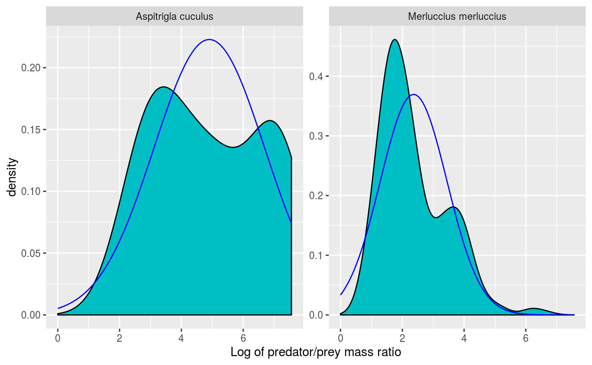
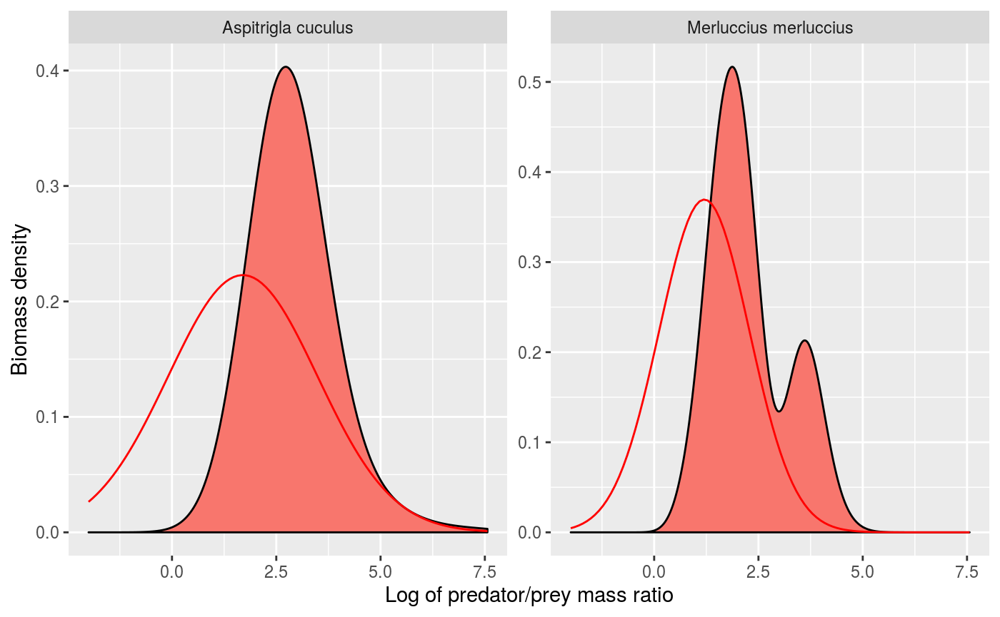
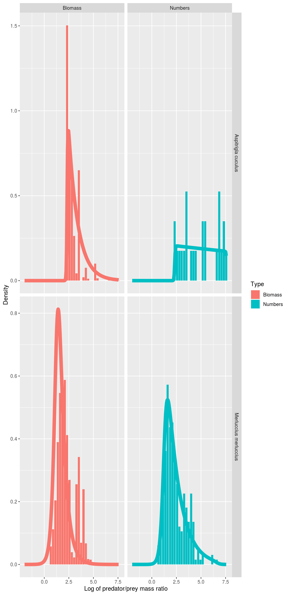
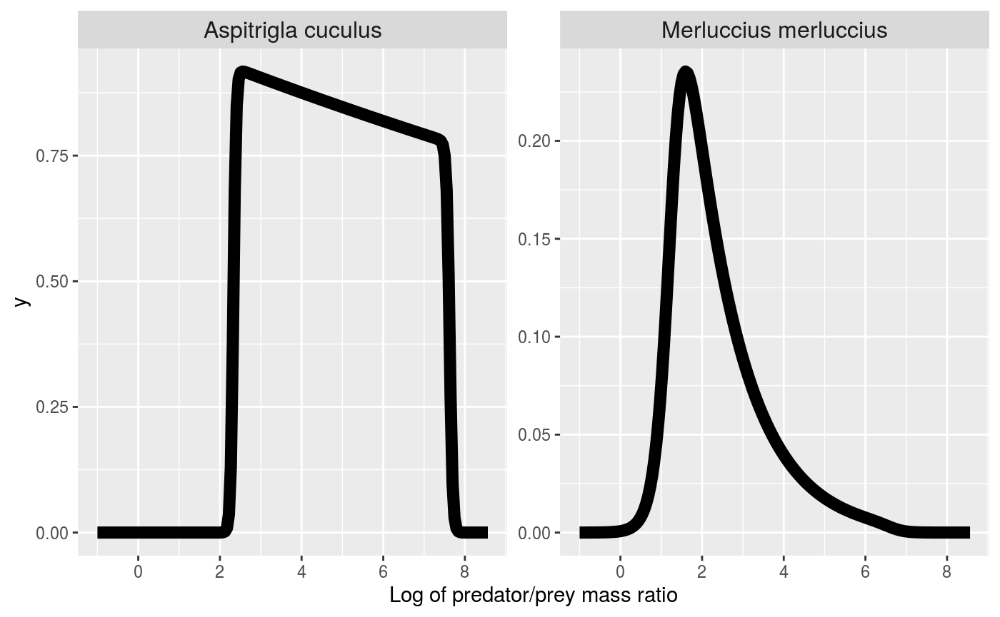

vignettes/estimating_feeding_kernel_params.Rmd
estimating_feeding_kernel_params.RmdSpecifying the species we are interested in:
Here we will use the Barnes dataset. If you don’t have it, you can download it with
download.file("http://esapubs.org/archive/ecol/E089/051/Predator_and_prey_body_sizes_in_marine_food_webs_vsn4.txt", destfile = "barnes.csv")We load the entire Barnes dataset and then select only the part we are interested in
stomach_all <-
read_tsv("barnes.csv",
na = c("", "n/a"),
guess_max = 10000)
stomach <- stomach_all %>%
filter(Predator %in% select) %>%
# you could alternatively select by common name
# filter(`Predator common name` %in% selected) %>%
transmute(Species = Predator,
Nprey = 1,
wpredator = `SI predator mass`,
wprey = `SI prey mass`,
l = log(wpredator / wprey)) %>%
# ignore prey that are larger than the predator
filter(l > 0) %>%
group_by(Species) %>%
mutate(weight_numbers = Nprey / sum(Nprey),
weight_biomass = Nprey * wprey / sum(Nprey * wprey))
stomach
#> # A tibble: 303 x 7
#> # Groups: Species [2]
#> Species Nprey wpredator wprey l weight_numbers weight_biomass
#> <chr> <dbl> <dbl> <dbl> <dbl> <dbl> <dbl>
#> 1 Merluccius merlucc… 1 49.1 6.6 2.01 0.00358 0.000457
#> 2 Merluccius merlucc… 1 56.2 23.6 0.870 0.00358 0.00163
#> 3 Merluccius merlucc… 1 81.6 3.32 3.20 0.00358 0.000230
#> 4 Merluccius merlucc… 1 91.4 1.20 4.33 0.00358 0.0000831
#> 5 Merluccius merlucc… 1 91.4 7.76 2.47 0.00358 0.000537
#> 6 Merluccius merlucc… 1 102. 8.07 2.54 0.00358 0.000559
#> 7 Merluccius merlucc… 1 126. 4.98 3.23 0.00358 0.000345
#> 8 Merluccius merlucc… 1 139. 22.7 1.81 0.00358 0.00157
#> 9 Merluccius merlucc… 1 167. 26.6 1.84 0.00358 0.00184
#> 10 Merluccius merlucc… 1 167. 3.95 3.75 0.00358 0.000273
#> # … with 293 more rowsno_bins <- 30 # Number of bins
binsize <- (max(stomach$l) - min(stomach$l)) / (no_bins - 1)
breaks <- seq(min(stomach$l) - binsize/2,
by = binsize, length.out = no_bins + 1)
binned_stomach <- stomach %>%
# bin data
mutate(cut = cut(l, breaks = breaks, right = FALSE,
labels = FALSE)) %>%
group_by(Species, cut) %>%
summarise(Numbers = sum(Nprey),
Biomass = sum(Nprey * wprey)) %>%
# normalise
mutate(Numbers = Numbers / sum(Numbers) / binsize,
Biomass = Biomass / sum(Biomass) / binsize) %>%
# column for predator/prey size ratio
mutate(l = map_dbl(cut, function(idx) breaks[idx] + binsize/2)) %>%
gather(key = "Type", value = "Density", Numbers, Biomass)Next we fit normal densities:
grid <- seq(0, max(stomach$l), length = 100)
normaldens <- plyr::ddply(stomach, "Species", function(df) {
data.frame(
l = grid,
density = dnorm(grid, mean(df$l), sd(df$l))
)
})
ggplot(stomach) +
geom_density(aes(l, weight = weight_numbers), fill = "#00BFC4") +
facet_wrap(~Species, scales = "free_y", ncol = 4) +
xlab("Log of predator/prey mass ratio") +
geom_line(aes(l, density), data = normaldens,
colour = "blue")
Next we look at the biomass distribution. We plot the normal density arising from the above fits on top of the observed biomass distribution.
grid <- seq(-2, max(stomach$l), length = 100)
shifted_normaldens <- plyr::ddply(stomach, "Species", function(df) {
data.frame(
l = grid,
density = dnorm(grid, mean(df$l) - sd(df$l)^2, sd(df$l))
)
})
ggplot(stomach) +
geom_density(aes(l, weight = weight_biomass), fill = "#F8766D") +
facet_wrap(~Species, scales = "free_y", ncol = 4) +
xlab("Log of predator/prey mass ratio") +
ylab("Biomass density") +
geom_line(aes(l, density), data = shifted_normaldens,
colour = "red")
If we are happy with the fits, then we would set the following species parameters:
lambda <- 2.05
sp <- stomach %>%
group_by(Species) %>%
summarize(sigma = sd(l),
beta = exp(mean(l) + (4/3 - lambda) * sigma^2),
mean = exp(mean(l)))
sp
#> # A tibble: 2 x 4
#> Species sigma beta mean
#> <chr> <dbl> <dbl> <dbl>
#> 1 Aspitrigla cuculus 1.79 13.6 135.
#> 2 Merluccius merluccius 1.08 4.63 10.7We choose \[ f_l(l) \propto \frac{\exp(\alpha\ l)} {\left(1+e^{u_l(l_l - l)}\right) \left(1+e^{u_r(l - l_r)}\right)}. \]
fl <- function(l, alpha, ll, ul, lr, ur) {
dl <- ll - l
dr <- l - lr
fl <- exp(alpha * l) /
(1 + exp(ul * dl)) /
(1 + exp(ur * dr))
}
dtexp <- function(l, alpha, ll, ul, lr, ur) {
d <- fl(l, alpha, ll, ul, lr, ur) /
integrate(fl, 0, 30, alpha = alpha,
ll = ll, ul = ul, lr = lr, ur = ur)$value
if (any(d <= 0)) {
stop("The density contains non-positive values when",
" alpha = ", alpha, " ll = ", ll, " ul = ", ul,
" lr = ", lr, " ur = ", ur)
}
return(d)
}We estimate the 5 parameters by maximum likelihood estimation, which in this case can only be done numerically.
mle_texp <- function(df) {
loglik <- function(alpha, ll, ul, lr, ur) {
L <- dtexp(df$l, alpha, ll, ul, lr, ur)
- sum(log(L) * df$weight_numbers)
}
mle2(loglik, start = list(
alpha = -0.5,
ll = min(df$l),
lr = max(df$l),
ul = 5,
ur = 5))
}
est <- stomach %>%
group_modify(~ broom::tidy(mle_texp(.x))) %>%
select(Species, term, estimate) %>%
spread(term, estimate)
#> Warning in mle2(loglik, start = list(alpha = -0.5, ll = min(df$l), lr =
#> max(df$l), : convergence failure: code=1 (iteration limit 'maxit' reached)
#> Warning in sqrt(diag(object@vcov)): NaNs produced
est
#> # A tibble: 2 x 6
#> # Groups: Species [2]
#> Species alpha ll lr ul ur
#> <chr> <dbl> <dbl> <dbl> <dbl> <dbl>
#> 1 Aspitrigla cuculus -0.0333 2.33 7.63 29.5 27.0
#> 2 Merluccius merluccius -0.807 1.28 6.68 5.64 5.05Even if convergence fails, the resulting fit may be good enough. Let’s have a look:
grid = seq(-2, max(stomach$l), length.out = 200)
texpdens <- plyr::ddply(est, "Species", function(df) {
data.frame(
l = grid,
Numbers = dtexp(grid, df$alpha, df$ll, df$ul, df$lr, df$ur),
Biomass = dtexp(grid, df$alpha - 1, df$ll, df$ul, df$lr, df$ur)
)}) %>%
gather(Type, Density, Numbers, Biomass)
ggplot(binned_stomach) +
geom_col(aes(l, Density, fill = Type)) +
facet_grid(Species ~ Type, scales = "free_y") +
xlab("Log of predator/prey mass ratio") +
geom_line(aes(l, Density, colour = Type), size = 3, data = texpdens)
est
#> # A tibble: 2 x 6
#> # Groups: Species [2]
#> Species alpha ll lr ul ur
#> <chr> <dbl> <dbl> <dbl> <dbl> <dbl>
#> 1 Aspitrigla cuculus -0.0333 2.33 7.63 29.5 27.0
#> 2 Merluccius merluccius -0.807 1.28 6.68 5.64 5.05We now determine the kernel parameters:
lambda <- 2.05
sp <- est %>%
transmute(kernel_exp = alpha + 4/3 - lambda,
kernel_l_l = ll,
kernel_u_l = ul,
kernel_l_r = lr,
kernel_u_r = ur)
sp
#> # A tibble: 2 x 6
#> # Groups: Species [2]
#> Species kernel_exp kernel_l_l kernel_u_l kernel_l_r kernel_u_r
#> <chr> <dbl> <dbl> <dbl> <dbl> <dbl>
#> 1 Aspitrigla cuculus -0.750 2.33 29.5 7.63 27.0
#> 2 Merluccius merluccius -1.52 1.28 5.64 6.68 5.05Let’s take a look at the resulting kernels
grid = seq(-1, max(stomach$l) + 1, length.out = 200)
phi <- plyr::ddply(est, "Species", function(df) {
data.frame(
l = grid,
y = power_law_pred_kernel(exp(grid), df$alpha, df$ll, df$ul, df$lr, df$ur)
)})
ggplot(binned_stomach) +
facet_wrap(~Species, scales = "free_y") +
xlab("Log of predator/prey mass ratio") +
geom_line(aes(l, y), size = 3, data = phi) +
theme(strip.text = element_text(size = 12))